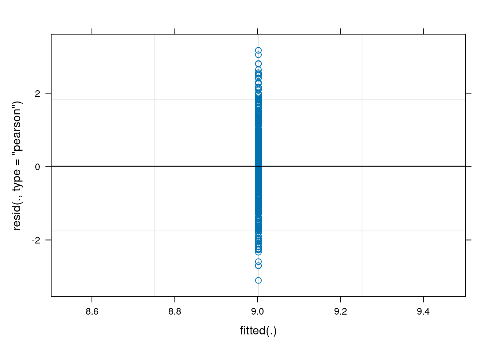
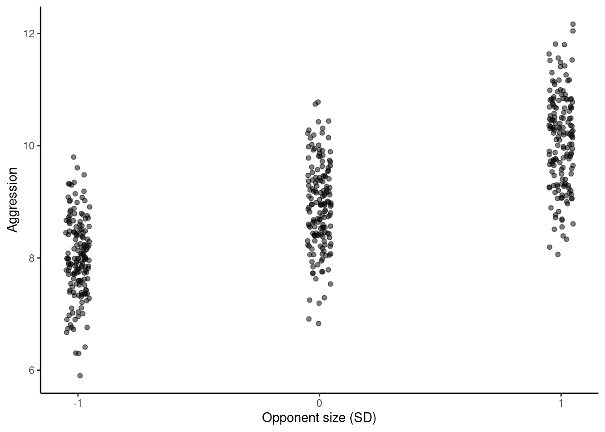
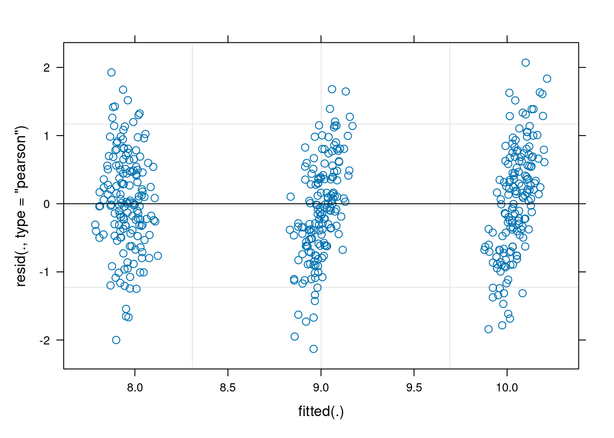
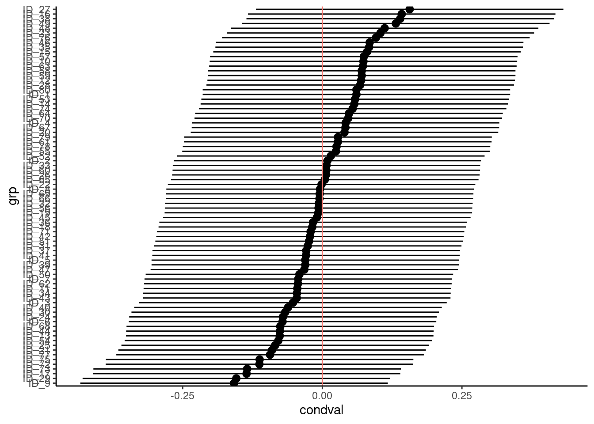
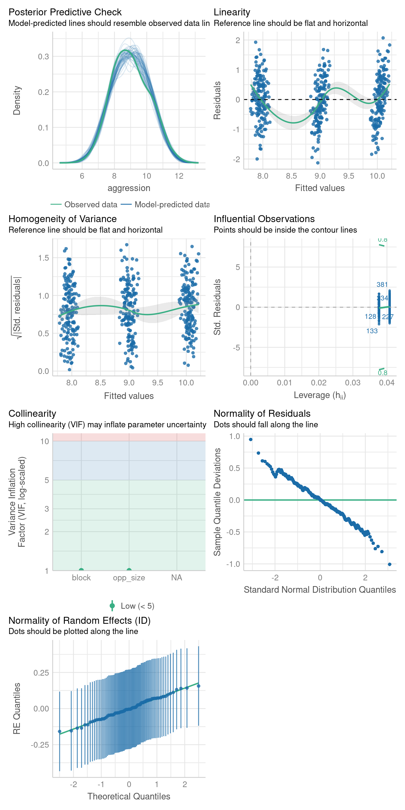

Linear mixed model fit by REML. t-tests use Satterthwaite's method [
lmerModLmerTest]
Formula: y ~ x + (x | cluster)
Data: df
REML criterion at convergence: 3012.2
Scaled residuals:
Min 1Q Median 3Q Max
-2.9392 -0.6352 -0.0061 0.6156 2.8721
Random effects:
Groups Name Variance Std.Dev. Corr
cluster (Intercept) 0.29138 0.5398
x 0.05986 0.2447 0.30
Residual 0.99244 0.9962
Number of obs: 1000, groups: cluster, 100
Fixed effects:
Estimate Std. Error df t value Pr(>|t|)
(Intercept) 0.93647 0.06282 98.38512 14.91 <2e-16 ***
x 0.54405 0.04270 91.69469 12.74 <2e-16 ***
---
Signif. codes: 0 '***' 0.001 '**' 0.01 '*' 0.05 '.' 0.1 ' ' 15 Introduction to linear mixed models
5.1 Lecture
5.1.1 Testing fixed effects
making a note that LRT on fixed effects should not be the preferred method and more inportantly should eb done using ML and not REML Fitsee pinheiro & Bates 2000 p76
5.1.2 Shrinkage
The following is an example of shrinkage, sometimes called partial-pooling, as it occurs in mixed effects models.
It is often the case that we have data such that observations are clustered in some way (e.g. repeated observations for units over time, students within schools, etc.). In mixed models, we obtain cluster-specific effects in addition to those for standard coefficients of our regression model. The former are called random effects, while the latter are typically referred to as fixed effects or population-average effects.
In other circumstances, we could ignore the clustering, and run a basic regression model. Unfortunately this assumes that all observations behave in the same way, i.e. that there are no cluster-specific effects, which would often be an untenable assumption. Another approach would be to run separate models for each cluster. However, aside from being problematic due to potentially small cluster sizes in common data settings, this ignores the fact that clusters are not isolated and potentially have some commonality.
Mixed models provide an alternative where we have cluster specific effects, but ‘borrow strength’ from the population-average effects. In general, this borrowing is more apparent for what would otherwise be more extreme clusters, and those that have less data. The following will demonstrate how shrinkage arises in different data situations.
5.1.2.1 Analysis
For the following we run a basic mixed model with a random intercept and random slopes for a single predictor variable. There are a number of ways to write such models, and the following does so for a single cluster \(c\) and observation \(i\). \(y\) is a function of the covariate \(x\), and otherwise we have a basic linear regression model. In this formulation, the random effects for a given cluster (\(u_{* c}\)) are added to each fixed effect (intercept \(b_0\) and the effect of \(x\), \(b_1\)). The random effects are multivariate normally distributed with some covariance. The per observation noise \(\sigma\) is assumed constant across observations.
\[\mu_{ic} = (b_0 + \mathrm{u}_{0c})+ (b_1+\mathrm{u}_{1c}) * x_{ic}\] \[\mathrm{u}_{0}, \mathrm{u}_{1} \sim \mathcal{N}(0, \Sigma)\] \[y \sim \mathcal{N}(\mu, \sigma^2)\]
Such models are highly flexible and have many extensions, but this simple model is enough for our purposes.
5.1.2.2 Data
Default settings for data creation are as follows:
-
obs_per_cluster(observations per cluster) = 10 -
n_cluster(number of clusters) = 100 -
intercept(intercept) = 1 -
beta(coefficient for x) = .5 -
sigma(observation level standard deviation) = 1 -
sd_int(standard deviation for intercept random effect)= .5 -
sd_slope(standard deviation for x random effect)= .25 -
cor(correlation of random effect) = 0 -
balanced(fraction of overall sample size) = 1 -
seed(for reproducibility) = 1024
In this setting, \(x\) is a standardized variable with mean zero and standard deviation of 1. Unless a fraction is provided for balanced, the \(N\), i.e. the total sample size, is equal to n_cluster * obs_per_cluster. The following is the function that will be used to create the data, which tries to follow the model depiction above. It requires the tidyverse package to work.
5.1.2.3 Run the baseline model
We will use lme4 to run the analysis. We can see that the model recovers the parameters fairly well, even with the default of only 1000 observations.
5.1.2.4 Visualize the baseline model
Now it is time to visualize the results. We will use gganimate to bring the shrinkage into focus. We start with the estimates that would be obtained by a ‘regression-by-cluster’ approach or a linear regression for each cluster. The movement shown will be of those cluster-specific estimates toward the mixed model estimates. On the x axis is the estimate for the intercepts, on the y axis are the estimated slopes of the x covariate.

We see more clearly what the mixed model does. The general result is that cluster-specific effects (lighter color) are shrunk back toward the population-average effects (the ‘black hole’), as the imposed normal distribution for the random effects makes the extreme values less probable. Likewise, those more extreme cluster-specific effects, some of which are not displayed as they are so far from the population average, will generally have the most shrinkage imposed. In terms of prediction, it is akin to introducing bias for the cluster specific effects while lowering variance for prediction of new data, and allows us to make predictions on new categories we have not previously seen - we just assume an ‘average’ cluster effect, i.e. a random effect of 0.
5.1.2.5 Summary
Mixed models incorporate some amount of shrinkage for cluster-specific effects. Data nuances will determine the relative amount of ‘strength borrowed’, but in general, such models provide a good way for the data to speak for itself when it should, and reflect an ‘average’ when there is little information. An additional benefit is that thinking about models in this way can be seen as a precursor to Bayesian approaches, which can allow for even more flexibility via priors, and more control over how shrinkage is added to the model.
5.2 Practical
5.2.1 Overview
This practical is intended to get you started fitting some simple mixed models with so called random intercepts. The tutorial is derived from one that accompanied the paper (Houslay and Wilson 2017), “Avoiding the misuse of BLUP in behavioral ecology”. Here, you will be working through a simplified version in which I have taken more time to cover the basic mixed models and don’t cover multivariate models which were really the main point of that paper. So if you find this material interesting don’t worry we will go through a more advanced version of the original paper on multivariate models in chapter XX. The original version will be worth a work through to help you break into multivariate mixed models anyway! Here we will:
- Learn how to fit - and interpret the results of - a simple univariate mixed effect model
- See how to add fixed and random effects to your model, and to test their significance in the normal frequentists sense
We are going to use the 📦 lme4 (Bates et al. 2021) which is widely used and great for simple mixed models. However, since, for philosophical reasons, lme4 does not provide any p-values for either fixed or random effects, we are going to use the 📦 lmerTest (Kuznetsova et al. 2020), which add a bunch a nice goodies to lme4 For slightly more complex models, including multivariate ones, generalised models, and random effects of things like shared space, pedigree, phylogeny I tend to use different 📦 like MCMCglmm (Hadfield 2010) (which is Bayesian, look at Jarrod Hadfield’s excellent course notes (Hadfield 2022)) or ASReml-R (Butler 2021) (which is likelihood based/frequentist but sadly is not free).
5.2.2 R packages needed
First we load required libraries
5.2.3 The superb wild unicorns of the Scottish Highlands
Unicorns, a legendary animal and also symbol or Scotland, are frequently described as extremely wild woodland creature but also a symbol of purity and grace. Here is one of most accurate representation of the lengendary animal.

Despite their image of purity and grace, unicorns (Unicornus legendaricus) are raging fighter when it comes to compete for the best sweets you can find at the bottom of rainbows (unicorn favourite source of food).
We want to know:
- If aggressiveness differs among individuals
- If aggressive behaviour is plastic (change with the environment)
- If aggressive behaviour depends on body condition of focal animal
With respect to plasticity, we will focus on rival size as an ‘environment’. Common sense, and animal-contest theory, suggest a small animal would be wise not to escalate an aggressive contest against a larger, stronger rival. However, there are reports in the legendary beasty literature that they get more aggressive as rival size increases. Those reports are based on small sample sizes and uncontrolled field observations by foreigners Munro baggers enjoying their whisky after a long day in the hills.
5.2.3.1 Experimental design
Here, we have measured aggression in a population of wild unicorns. We brought some (n=80) individual into the lab, tagged them so they were individually identifiable, then repeatedly observed their aggression when presented with model ‘intruders’ (animal care committe approved). There were three models; one of average unicorn (calculated as the population mean body length), one that was build to be 1 standard deviation below the population mean, and one that was 1 standard deviation above.
Data were collected on all individuals in two block of lab work. Within each block, each animal was tested 3 times, once against an ‘intruder’ of each size. The test order in which each animal experienced the three instruder sizes was randomised in each block. The body size of all focal individuals was measured at the beginning of each block so we know that too (and have two separate measures per individual).
5.2.3.2 looking at the data
Let’s load the data file unicorns_aggression.csv in a R object named unicorns and make sure we understand what it contains
Solution
unicorns <- read.csv("data/unicorns_aggression.csv")You can use summary(unicorns) to get an overview of the data and/or str(unicorns) to see the structure in the first few lines. This data frame has 6 variables:
str(unicorns)'data.frame': 480 obs. of 6 variables:
$ ID : chr "ID_1" "ID_1" "ID_1" "ID_1" ...
$ block : num -0.5 -0.5 -0.5 0.5 0.5 0.5 -0.5 -0.5 -0.5 0.5 ...
$ assay_rep : int 1 2 3 1 2 3 1 2 3 1 ...
$ opp_size : int -1 1 0 0 1 -1 1 -1 0 1 ...
$ aggression: num 7.02 10.67 10.22 8.95 10.51 ...
$ body_size : num 206 206 206 207 207 ...summary(unicorns) ID block assay_rep opp_size aggression
Length:480 Min. :-0.5 Min. :1 Min. :-1 Min. : 5.900
Class :character 1st Qu.:-0.5 1st Qu.:1 1st Qu.:-1 1st Qu.: 8.158
Mode :character Median : 0.0 Median :2 Median : 0 Median : 8.950
Mean : 0.0 Mean :2 Mean : 0 Mean : 9.002
3rd Qu.: 0.5 3rd Qu.:3 3rd Qu.: 1 3rd Qu.: 9.822
Max. : 0.5 Max. :3 Max. : 1 Max. :12.170
body_size
Min. :192.0
1st Qu.:229.7
Median :250.0
Mean :252.5
3rd Qu.:272.0
Max. :345.2 So the different columns in the data set are:
- Individual ID
- Experimental Block, denoted for now as a continuous variable with possible values of -0.5 (first block) or +0.5 (second block)
- Individual body_size, as measured at the start of each block in kg
- The repeat number for each behavioural test, assay_rep
- Opponent size (opp_size), in standard deviations from the mean (i.e., -1,0,1)
- aggression, our behavioural trait, measured 6 times in total per individual (2 blocks of 3 tests)
maybe add something on how to look at data structure closely using tables
5.2.4 Do unicorns differ in aggressiveness? Your first mixed model
Fit a first mixed model with lmer that have only individual identity as a random effect and only a population mean.
Why, so simple? Because we simply want to partition variance around the mean into a component that among-individual variance and one that is within-individual variance.
We are going to use the function lmer() from the 📦 lme4 package. The notation of the model formula is similar as the notation for a linear model but now we also add random effects using the notation (1 | r_effect) which indicates that we want to fit the variable r_effect as a random effect for the intercept. Thus, in lmer notation a simploe model would be :
lmer(Y ~ x1 + x2 + (1 | r_effect), data = data)
Solution
A sensible researcher would probably take the time to do some exploratory data plots here. So let’s write a mixed model. This one is going to have no fixed effects except the mean, and just one random effect - individual identity.
m_1 <- lmer(aggression ~ 1 + (1 | ID), data = unicorns)boundary (singular) fit: see help('isSingular')There is a warning… something about “singularities”. Ignore that for a moment.
Now you need to get the model output. By that I just mean use summary(model_name).
Solution
summary(m_1)Linear mixed model fit by REML. t-tests use Satterthwaite's method [
lmerModLmerTest]
Formula: aggression ~ 1 + (1 | ID)
Data: unicorns
REML criterion at convergence: 1503.7
Scaled residuals:
Min 1Q Median 3Q Max
-2.68530 -0.73094 -0.04486 0.71048 2.74276
Random effects:
Groups Name Variance Std.Dev.
ID (Intercept) 0.000 0.000
Residual 1.334 1.155
Number of obs: 480, groups: ID, 80
Fixed effects:
Estimate Std. Error df t value Pr(>|t|)
(Intercept) 9.00181 0.05272 479.00000 170.7 <2e-16 ***
---
Signif. codes: 0 '***' 0.001 '**' 0.01 '*' 0.05 '.' 0.1 ' ' 1
optimizer (nloptwrap) convergence code: 0 (OK)
boundary (singular) fit: see help('isSingular')In the summary you will find a table of fixed effects.
Fixed effects:
Estimate Std. Error df t value Pr(>|t|)
(Intercept) 9.00181 0.05272 479.00000 170.7 <2e-16 ***The intercept (here the mean) is about 9 and is significantly >0 - fine, but not very interesting to us.
You will also find a random effect table that contains estimates of the among individual (ID) and residual variances.
Random effects:
Groups Name Variance Std.Dev.
ID (Intercept) 0.000 0.000
Residual 1.334 1.155
Number of obs: 480, groups: ID, 80The among individual (ID) is estimated as zero. In fact this is what the cryptic warning was about: in most situations the idea of a random effect explaining less than zero variance is not sensible (strangely there are exception!). So by default the variance estimates are constrained to lie in positive parameter space. Here in trying to find the maximum likelihood solution for among-individual variance, our model has run up against this constraint.
5.2.4.1 Testing for random effects
We can test the statistical significance of the random effect using the ranova() command in lmerTest. This function is actually doing a likelihood ratio test (LRT) of the random effect. The premise of which is that twice the difference in log-likelihood of the full and reduced (i.e. with the random effect dropped) is itself distributed as \(\chi^2\)$ with DF equal to the number of parameters dropped (here 1). Actually, there is a good argument that this is too conservative, but we can discuss that later. So let’s do the LRT for the random effect using ranova()
Solution
ranova(m_1)ANOVA-like table for random-effects: Single term deletions
Model:
aggression ~ (1 | ID)
npar logLik AIC LRT Df Pr(>Chisq)
<none> 3 -751.83 1509.7
(1 | ID) 2 -751.83 1507.7 0 1 1There is apparently no among-individual variance in aggressiveness.
So this is a fairly rubbish and underwhelming model. Let’s improve it.
5.2.5 Do unicorns differ in aggressiveness? A better mixed model
The answer we got from our first model is not wrong, it estimated the parameters we asked for and that might be informative or not and that might be representative or not of the true biology. Anyway all models are wrong but as models go this one is fairly rubbish. In fact we have explained no variation at all as we have no fixed effects (except the mean) and our random effect variance is zero. We woud have seen just how pointless this model was if we’d plotted it
plot(m_1)
So we can probably do better at modelling the data, which may or may not change our view on whether there is any real variation among unicorns in aggressiveness.
For instance, we can (and should have started with) an initial plot of the phenotypic data against opponent size indicates to have a look at our prediction.
Solution
The code below uses the excellent 📦 ggplot2 but the same figure can be done using base R code.
ggplot(unicorns, aes(x = opp_size, y = aggression)) +
geom_jitter(
alpha = 0.5,
width = 0.05
) +
scale_x_continuous(breaks = c(-1, 0, 1)) +
labs(
x = "Opponent size (SD)",
y = "Aggression"
) +
theme_classic()ggplot(unicorns, aes(x = opp_size, y = aggression)) +
geom_jitter(
alpha = 0.5,
width = 0.05
) +
scale_x_continuous(breaks = c(-1, 0, 1)) +
labs(
x = "Opponent size (SD)",
y = "Aggression"
) +
theme_classic()
As predicted, there is a general increase in aggression with opponent size (points are lightly jittered on the x-axis to show the spread of data a little better)
You can see the same thing from a quick look at the population means for aggression at opponent size. Here we do it with the kable function that makes nice tables in rmarkdown documents.
unicorns %>%
group_by(opp_size) %>%
summarise(mean_aggr = mean(aggression)) %>%
knitr::kable(digits = 2)| opp_size | mean_aggr |
|---|---|
| -1 | 8.00 |
| 0 | 8.91 |
| 1 | 10.09 |
So, there does appear to be plasticity of aggression with changing size of the model opponent. But other things may explain variation in aggressiveness too - what about block for instance? Block effects may not be the subject of any biologically interesting hypotheses, but accounting for any differences between blocks could remove noise.
There may also be systematic change in behaviour as an individual experiences more repeat observations (i.e. exposure to the model). Do they get sensitised or habituated to the model intruder for example?
So let’s run a mixed model with the same random effect of individual, but with a fixed effects of opponent size (our predictor of interest) and experimental block.
Solution
m_2 <- lmer(aggression ~ opp_size + block + (1 | ID), data = unicorns)5.2.5.1 Diagnostic plots
Run a few diagnostic plots before we look at the answers. In diagnostic plots, we want to check the condition of applications of the linear mixed model which are the same 4 as the linear model plus 2 extra:
- Linearity of the relation between covariates and the response
Solution
Done with data exploration graph (i.e. just plot the data see if it is linear) - see previous graph @ref(fig:rplotaggr).
- No error on measurement of covariates
Solution
assumed to be correct if measurement error is lower than 10% of variance in the variable - I know this sounds pretty bad
- Residual have a Gaussian distribution
Solution
- Homoscedasticty (variance of residuals is constant across covariates)
Solution
Using plot of residuals by fitted values
plot(m_2)
- Random effects have a Gaussian distribution
Solution
- Residual variance is constant across all levels of a random effect
Solution
No straightforward solution to deal with that. We can just do a plot is absolutely not-informative for that problem but I always like to look at. It is the plot of the sorted BLUPs with their associated errors.
r1 <- r1[order(r1$condval), ] # sorting the BLUPs
ggplot(r1, aes(y = grp, x = condval)) +
geom_point() +
geom_pointrange(
aes(xmin = condval - condsd * 1.96, xmax = condval + condsd * 1.96)
) +
geom_vline(aes(xintercept = 0, color = "red")) +
theme_classic() +
theme(legend.position = "none")
Here is a great magic trick 🎇 because 3-5 and more can be done in one step
Solution
You need to use the function check_model() from the 📦 performance package.
check_model(m_2)
5.2.5.2 Inferences
Now summarise this model. We will pause here for you to think about and discuss a few things: * What can you take from the fixed effect table? * How do you interpret the intercept now that there are other effects in the model? * What would happen if we scaled our fixed covariates differently? Why?
Solution
summary(m_2)Linear mixed model fit by REML. t-tests use Satterthwaite's method [
lmerModLmerTest]
Formula: aggression ~ opp_size + block + (1 | ID)
Data: unicorns
REML criterion at convergence: 1129.9
Scaled residuals:
Min 1Q Median 3Q Max
-2.79296 -0.64761 0.00155 0.67586 2.71456
Random effects:
Groups Name Variance Std.Dev.
ID (Intercept) 0.02478 0.1574
Residual 0.58166 0.7627
Number of obs: 480, groups: ID, 80
Fixed effects:
Estimate Std. Error df t value Pr(>|t|)
(Intercept) 9.00181 0.03901 79.00000 230.778 <2e-16 ***
opp_size 1.04562 0.04263 398.00000 24.525 <2e-16 ***
block -0.02179 0.06962 398.00000 -0.313 0.754
---
Signif. codes: 0 '***' 0.001 '**' 0.01 '*' 0.05 '.' 0.1 ' ' 1
Correlation of Fixed Effects:
(Intr) opp_sz
opp_size 0.000
block 0.000 0.000
Exercise
Try tweaking the fixed part of your model:
- What happens if you add more fixed effects? Try it!
- Could focal body size also matter? If so, should you rescale before adding it to the model?
- Should you add interactions (e.g. block:opp_size)?
- Should you drop non-significant fixed effects?
Exercise
Having changed the fixed part of your model, do the variance estimates change at all?
- Is among-individual variance always estimated as zero regardless of fixed effects?
- Is among-individual variance significant with some fixed effets structures but not others?
5.2.6 What is the repeatability?
As a reminder, repeatability is the proportion of variance explained by a random effect and it is estimate as the ratio of the variance associated to a random effect by the total variance, or the sum of the residual variance and the different variance compoentn associated with the random effects. In our first model among-individual variance was zero, so R was zero. If we have a different model of aggression and get a non-zero value of the random effect variance, we can obviously calculate a repeatability estimate (R). So we are all working from the same starting point, let’s all stick with a common set of fixed effects from here on:
m_3 <- lmer(
aggression ~ opp_size + scale(body_size, center = TRUE, scale = TRUE)
+ scale(assay_rep, scale = FALSE) + block
+ (1 | ID),
data = unicorns
)
summary(m_3)Linear mixed model fit by REML. t-tests use Satterthwaite's method [
lmerModLmerTest]
Formula:
aggression ~ opp_size + scale(body_size, center = TRUE, scale = TRUE) +
scale(assay_rep, scale = FALSE) + block + (1 | ID)
Data: unicorns
REML criterion at convergence: 1136.5
Scaled residuals:
Min 1Q Median 3Q Max
-2.85473 -0.62831 0.02545 0.68998 2.74064
Random effects:
Groups Name Variance Std.Dev.
ID (Intercept) 0.02538 0.1593
Residual 0.58048 0.7619
Number of obs: 480, groups: ID, 80
Fixed effects:
Estimate Std. Error df
(Intercept) 9.00181 0.03907 78.07315
opp_size 1.05141 0.04281 396.99857
scale(body_size, center = TRUE, scale = TRUE) 0.03310 0.03896 84.21144
scale(assay_rep, scale = FALSE) -0.05783 0.04281 396.99857
block -0.02166 0.06955 397.00209
t value Pr(>|t|)
(Intercept) 230.395 <2e-16 ***
opp_size 24.562 <2e-16 ***
scale(body_size, center = TRUE, scale = TRUE) 0.850 0.398
scale(assay_rep, scale = FALSE) -1.351 0.177
block -0.311 0.756
---
Signif. codes: 0 '***' 0.001 '**' 0.01 '*' 0.05 '.' 0.1 ' ' 1
Correlation of Fixed Effects:
(Intr) opp_sz sc=Ts=T s(_s=F
opp_size 0.000
s(_,c=TRs=T 0.000 0.000
s(_,s=FALSE 0.000 -0.100 0.000
block 0.000 0.000 0.002 0.000So we’d probably calculate R using the individual and residual variance simply as:
0.02538 / (0.02538 + 0.58048)[1] 0.04189087
Exercise
Do you see where I took the numbers ?
We can use some more fancy coding to extract the estimates and plugged them in a formula to estimate the repeatbility
[1] 0.04188879Which yields an estimate of approximately R=4%. Strictly speaking we should make clear this a conditional repeatability estimate.
Conditional on what you might ask… on the fixed effects in your model. So our best estimate of 4% refers to the proportion of variance in aggressiveness not explained by fixed effects that is explained by individual identity. This isn’t much and still won’t be significant, but illustrates the point that conditional repeatabilities often have a tendency to go up as people explain more of the residual variance by adding fixed effects. This is fine and proper, but can mislead the unwary reader. It also means that decisions about which fixed effects to include in your model need to be based on how you want to interpret R not just on, for instance, whether fixed effects are deemed significant.
5.2.7 A quick note on uncertainty
Using lmer in the 📦 lme4 📦 there isn’t a really simple way to put some measure of uncertainty (SE or CI) on derived parameters like repeatabilities. This is a bit annoying. Such things are more easily done with other mixed model 📦 like MCMCglmm and asreml which are a bit more specialist. If you are using lmer for models you want to publish then you could look into the 📦 rptR (Stoffel et al. 2019). This acts as a ‘wrapper’ for lmer models and adds some nice functionality including options to boostrap confidence intervals. Regardless, of how you do it, if you want to put a repeatability in one of your papers as a key result - it really should be accompanied by a measure of uncertainty just like any other effect size estimate.
Here I am estimating the repeatability and using bootstrap to estimate a confidence interval and a probability associated with the repeatability with the rptR 📦. For more information about the use of the package and the theory behind it suggest the excellent paper associated with the package (Stoffel et al. 2017)
r_rpt <- rptGaussian(
aggression ~ opp_size + block + (1 | ID),
grname = "ID", data = unicorns
)Bootstrap Progress:r_rpt
Repeatability estimation using the lmm method
Repeatability for ID
R = 0.041
SE = 0.03
CI = [0, 0.103]
P = 0.0966 [LRT]
NA [Permutation]5.2.8 An easy way to mess up your mixed models
We will try some more advanced mixed models in a moment to explore plasticity in aggressiveness a bit more. First let’s quickly look for among-individual variance in focal body size. Why not? We have the data handy, everyone says morphological traits are very repeatable and - lets be honest - who wouldn’t like to see a small P value after striking out with aggressiveness.
Include a random effect of ID as before and maybe a fixed effect of block, just to see if the beasties were growing a bit between data collection periods.
lmer_size <- lmer(body_size ~ block + (1 | ID),
data = unicorns
)Summarise and test the random effect.
Solution
summary(lmer_size)Linear mixed model fit by REML. t-tests use Satterthwaite's method [
lmerModLmerTest]
Formula: body_size ~ block + (1 | ID)
Data: unicorns
REML criterion at convergence: 3460.7
Scaled residuals:
Min 1Q Median 3Q Max
-1.80452 -0.71319 0.00718 0.70280 1.81747
Random effects:
Groups Name Variance Std.Dev.
ID (Intercept) 936.01 30.594
Residual 34.32 5.858
Number of obs: 480, groups: ID, 80
Fixed effects:
Estimate Std. Error df t value Pr(>|t|)
(Intercept) 252.5031 3.4310 79.0000 73.595 <2e-16 ***
block -0.1188 0.5348 399.0000 -0.222 0.824
---
Signif. codes: 0 '***' 0.001 '**' 0.01 '*' 0.05 '.' 0.1 ' ' 1
Correlation of Fixed Effects:
(Intr)
block 0.000 ranova(lmer_size)ANOVA-like table for random-effects: Single term deletions
Model:
body_size ~ block + (1 | ID)
npar logLik AIC LRT Df Pr(>Chisq)
<none> 4 -1730.4 3468.7
(1 | ID) 3 -2325.6 4657.1 1190.4 1 < 2.2e-16 ***
---
Signif. codes: 0 '***' 0.001 '**' 0.01 '*' 0.05 '.' 0.1 ' ' 1
Exercise
What might you conclude, and why would this be foolish?
Solution
Hopefully you spotted the problem here. You have fed in a data set with 6 records per individual (with 2 sets of 3 identical values per unicorns), when you know size was only measured twice in reality. This means you’d expect to get a (potentially very) upwardly biased estimate of R and a (potentially very) downwardly biased P value when testing among-individual variance.
Exercise
How can we do it properly?
Solution
We can prune the data to the two actual observations per unicorns by just selecting the first assay in each block.
unicorns2 <- unicorns[unicorns$assay_rep == 1, ]
lmer_size2 <- lmer(body_size ~ block + (1 | ID),
data = unicorns2
)
summary(lmer_size2)Linear mixed model fit by REML. t-tests use Satterthwaite's method [
lmerModLmerTest]
Formula: body_size ~ block + (1 | ID)
Data: unicorns2
REML criterion at convergence: 1373.4
Scaled residuals:
Min 1Q Median 3Q Max
-1.54633 -0.56198 0.01319 0.56094 1.42095
Random effects:
Groups Name Variance Std.Dev.
ID (Intercept) 912.84 30.213
Residual 57.78 7.601
Number of obs: 160, groups: ID, 80
Fixed effects:
Estimate Std. Error df t value Pr(>|t|)
(Intercept) 252.5031 3.4310 79.0000 73.595 <2e-16 ***
block -0.1188 1.2019 79.0000 -0.099 0.922
---
Signif. codes: 0 '***' 0.001 '**' 0.01 '*' 0.05 '.' 0.1 ' ' 1
Correlation of Fixed Effects:
(Intr)
block 0.000 ranova(lmer_size2)ANOVA-like table for random-effects: Single term deletions
Model:
body_size ~ block + (1 | ID)
npar logLik AIC LRT Df Pr(>Chisq)
<none> 4 -686.68 1381.3
(1 | ID) 3 -771.93 1549.9 170.51 1 < 2.2e-16 ***
---
Signif. codes: 0 '***' 0.001 '**' 0.01 '*' 0.05 '.' 0.1 ' ' 1Summarise and test your random effect and you’ll see the qualitative conclusions will actually be very similar using the pruned data set. Of course this won’t generallty but be true, so just be careful. Mixed models are intended to help you model repeated measures data with non-independence, but they won’t get you out of trouble if you mis-represent the true structure of observations on your dependent variable.
5.2.9 Happy mixed-modelling